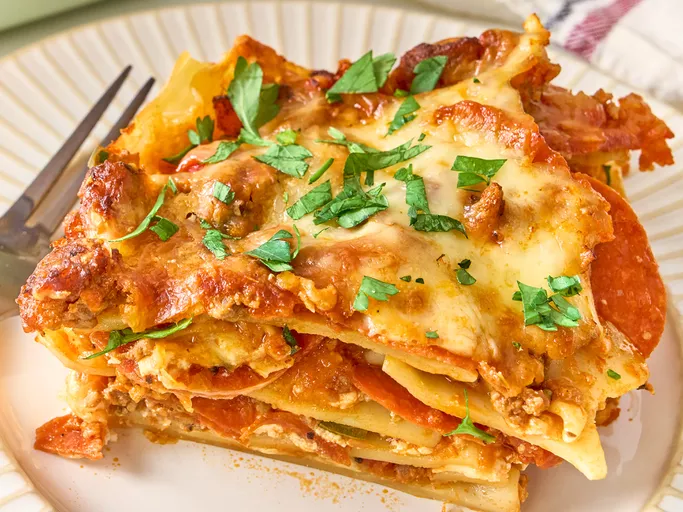

Cowboy Lasagna
Photo: Dotdash Meredith Food Studios
Description
This meaty cowboy lasagna, inspired by Trisha Yearwood's recipe, can serve a crowd of cowboys. Pasta sheets are layered with cheese, ground beef, pepperoni, and sausage. Jalapenos bring the heat.
Ingredients
- 1 tablespoon olive oil
- 1 pound ground sirloin
- 1 pound sage-flavored pork sausage
- 2 jalapeno peppers, seeded and chopped
- 1 onion, finely chopped
- 8 ounces pepperoni, roughly chopped
- 3 cloves garlic, minced
- 1 (15 ounce) can fire roasted diced tomatoes
- 1 (12-ounce) can tomato paste
- 1 teaspoon dried oregano
- 2 cups water
- salt and freshly ground black pepper to taste
- 1 pound lasagna noodles
- cooking spray
- 16 ounces ricotta cheese
- 16 ounces mozzarella cheese, shredded
- 2/3 cup grated Parmesan cheese
Steps
- Heat oil in a large deep skillet over medium-high heat. Add ground beef and sausage and cook, crumbling with a wooden spoon until browned, 5 to 7 minutes. Add jalapeno, onion, and garlic and cook, stirring often, until vegetables are softened, about 3 minutes. Add in pepperoni, tomatoes, tomato paste, oregano, and water and stir until well combined. Season to taste with salt and pepper. Bring to a simmer, reduce heat and cook, uncovered, stirring occasionally while pasta is prepared.
- Preheat the oven to 350 degrees F (180 degrees C).
- Bring a large pot of lightly salted water to a boil. Cook lasagna noodles in the boiling water, stirring occasionally, until tender yet firm to the bite, about 8 minutes. Drain.
- Coat a 9x13-inch baking dish with cooking spray. Spread a thin layer of sauce over the bottom of the prepared dish. Top with a layer of lasagna noodles, 1/2 of ricotta, and 1/3 of mozzarella cheese. Sprinkle with 1/3 of grated Parmesan cheese and 1/3 of sauce mixture. Repeat that layer once more. Top with remaining sauce, mozzarella cheese, and Parmesan.
- Bake in the preheated oven until browned around the edges and bubbly, about 40 minutes.Heat oil in a large deep skillet over medium-high heat. Add ground beef and sausage and cook, crumbling with a wooden spoon until browned, 5 to 7 minutes. Add jalapeno, onion, and garlic and cook, stirring often, until vegetables are softened, about 3 minutes. Add in pepperoni, tomatoes, tomato paste, oregano, and water and stir until well combined. Season to taste with salt and pepper. Bring to a simmer, reduce heat and cook, uncovered, stirring occasionally while pasta is prepared.